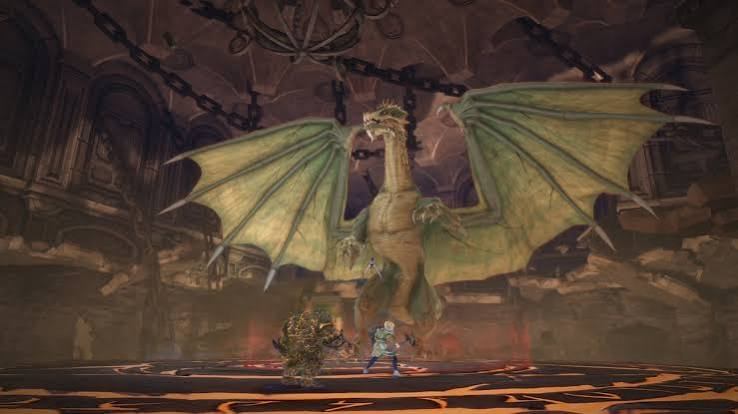

DUNGEON MECHANICS
LAIR OF THE MAD DRAGON
Kill the imps. Control the summoners. Don't let the dragon breathe on everybody.

OVERVIEW
LAIR OF THE MAD DRAGON
Lair of the Mad Dragon is built around controlled boss damage, priority adds and positioning.
The first two bosses punish groups that burn the boss too quickly without handling spawned enemies, while the final dragon requires good positioning and recognition of floor patterns.
BOSS ONE
M'RRAEL
- M'rael summons Imps at specific health thresholds.
- Imps are priority targets and should be killed immediately.
- Different Imps can buff enemy damage, create fire pools or heal nearby enemies.
- Do not burn the boss through multiple thresholds too quickly or several Imps can be active at once.
- Control boss damage and be ready to switch to Imps whenever they spawn.
AVOIDABLE DAMAGE
RED AREAS & CONE
- Red areas regularly appear on the floor.
- Move out immediately.
- Being hit applies a debuff that increases incoming damage.
- M'rael also uses a large cone attack.
- Move out of the cone early because the hit can land sooner than the visual suggests.
- The cone can kill almost any player, including the tank.
- Tanks should position the boss so the cone is not aimed toward DPS or spawned Imps.
TANK MECHANIC
SOAK ATTACK
- M'rael can temporarily disappear and return with a greyed health bar.
- This signals a heavy soak attack.
- The tank should move close to the boss and take the mechanic.
- DPS should stay clear rather than entering the soak area.
- On Master difficulty, additional larger fiends also spawn alongside the regular adds.
BOSS TWO
SUMMONERS & WARLOCKS
- The second boss summons Warlocks and Summoners at health thresholds.
- Summoners are the highest priority target.
- If left alive, Summoners begin spawning Hounds.
- Hounds are extremely dangerous and can quickly cause a wipe.
- Crowd control the Summoners immediately and kill them before they can summon Hounds.
- Warlocks increase enemy damage resistance.
- Warlocks are lower priority than Summoners, but must be killed before additional waves begin stacking too much resistance.
MASTER MECHANIC
ADD WAVES
- Above 50% boss health, waves contain one Summoner and one Warlock.
- At 50% and below, waves begin containing two Summoners.
- Below approximately 20%, waves occur more frequently.
- Late waves can contain two Summoners and two Warlocks.
- Slow boss damage if necessary so the group has time to clear each wave before triggering the next.
- Enter each health threshold with crowd control and burst damage ready.
POSITIONING
FLAME PILLARS
- Flame Pillars can target players standing too far away from the boss.
- The affected area is larger than it appears.
- Being hit applies heavy damage over time.
- Keep the group close to the boss whenever possible.
- Ranged companions or effects positioned far away can also trigger Flame Pillars.
- The damage-over-time effect can be cleansed.
BOSS TWO
PUSH MECHANIC
- The boss creates a red area before pushing players away.
- Move or dodge out of the red area before the push lands.
- A second outer red area follows and deals damage over time.
- Avoid the outer danger zone and move back in once it clears.
TANK MECHANIC
MULTI-TARGET BUSTER
- The boss regularly uses a heavy attack on the tank.
- The attack can also hit nearby players.
- Tanks should position away from DPS before the attack lands.
- DPS should remain behind or beside the boss rather than standing with the tank.
FINAL BOSS
GREEN DRAGON
- The dragon uses standard dragon mechanics including Roar, Wing attacks, Bite and poison pools.
- Avoid standing directly in front of the dragon.
- Avoid persistent poison areas on the ground.
- Tanks should position the dragon near the edge of the arena where possible.
KEY MECHANIC
RED TEARS
- Tear-like markings appear on the ground in different formations.
- These markings become damaging red areas moments later.
- Do not wait for the red telegraph before moving.
- Learn the pattern and move into a safe gap as soon as the tears appear.
- Several different formations can occur.
TANK POSITIONING
LEAP & POISON BREATH
- The dragon leaps toward or behind the tank.
- After landing, it uses a dangerous poison breath attack.
- The tank must reposition quickly so the breath is aimed away from the group.
- Fighting near the edge allows the tank to direct the breath safely toward the wall or outside of the group.
- Failing to reposition can cause the breath to hit the DPS behind the dragon.
FLOOR HAZARD
POISON POOLS
- Red circles appear beneath players before poison pools form.
- Move out immediately.
- The resulting poison can be difficult to see once the red marker disappears.
- Remember where each pool was placed and avoid returning to those areas.
- Standing in the poison applies additional damage and can increase incoming damage.
FINAL BURN
DAMAGE CHECK
- Near the end of the fight, the dragon deals repeated group-wide burst damage.
- Each burst applies a debuff that causes later hits to deal more damage.
- Healers and tanks should prepare mitigation.
- Burn the remaining boss health before the repeated damage overwhelms the group.
QUICK REFERENCE
MAD DRAGON SURVIVAL NOTES
- M'rael Imps → kill immediately.
- Don't burn through multiple Imp thresholds at once.
- First boss cone → MOVE EARLY.
- Grey boss health → tank takes the soak.
- Second boss Summoners → priority number one.
- Crowd control Summoners before they spawn Hounds.
- Warlocks → kill before resistance stacks build up.
- Stay close to second boss to avoid Flame Pillars.
- Tank buster → tank stays away from DPS.
- Dragon tears appear → move before they turn red.
- Dragon leaps → tank turns breath away from group.
- Poison pools → remember where they dropped.
- Final repeated damage → burn the bloody dragon.